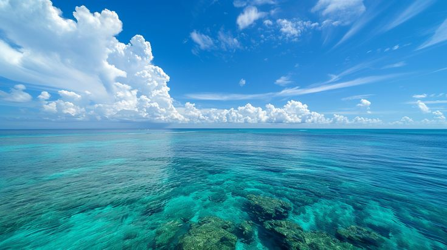

Top 5 Summer Destinations 2025
Summer is the perfect season to pack your bags, soak up the sun, and explore new horizons. Whether you’re looking for breathtaking beaches, cultural experiences, or cool escapes from the heat, the world has plenty to offer. Here are the top 5 summer destinations to add to your travel bucket list:
1. Santorini, Greece
With its iconic white-washed houses, blue-domed churches, and stunning sunsets over the Aegean Sea, Santorini tops many travelers’ lists. It’s ideal for romantic getaways, beach lovers, and food enthusiasts who want to enjoy authentic Greek cuisine. Don’t miss the villages of Oia and Fira for postcard-perfect views.
2. Bali, Indonesia
Bali is a paradise that combines adventure and relaxation. From golden beaches and surfing in Kuta to serene rice terraces in Ubud, Bali offers a mix of culture, nature, and spirituality. Visitors can indulge in yoga retreats, traditional Balinese spa treatments, or explore ancient temples.
3. Amalfi Coast, Italy
The Amalfi Coast is famous for its dramatic cliffs, pastel-colored villages, and crystal-clear waters. Towns like Positano and Ravello are perfect for exploring local boutiques, enjoying fresh seafood, and cruising along the Mediterranean. It’s a luxurious yet laid-back destination that’s best enjoyed with gelato in hand.
4. Kyoto, Japan
If you prefer a summer rich in history and culture, Kyoto is the place to be. Known for its tranquil temples, traditional tea houses, and beautiful gardens, Kyoto offers a more peaceful side of Japan. The summer festivals, like Gion Matsuri, bring the city alive with colorful parades and traditions.
5. Banff National Park, Canada
For those who want to escape the heat, Banff offers a refreshing alternative. Nestled in the Canadian Rockies, this national park is filled with turquoise lakes, glaciers, and wildlife. Summer is the best time to hike scenic trails, paddle across Lake Louise, or take a gondola ride for panoramic views.
Read more